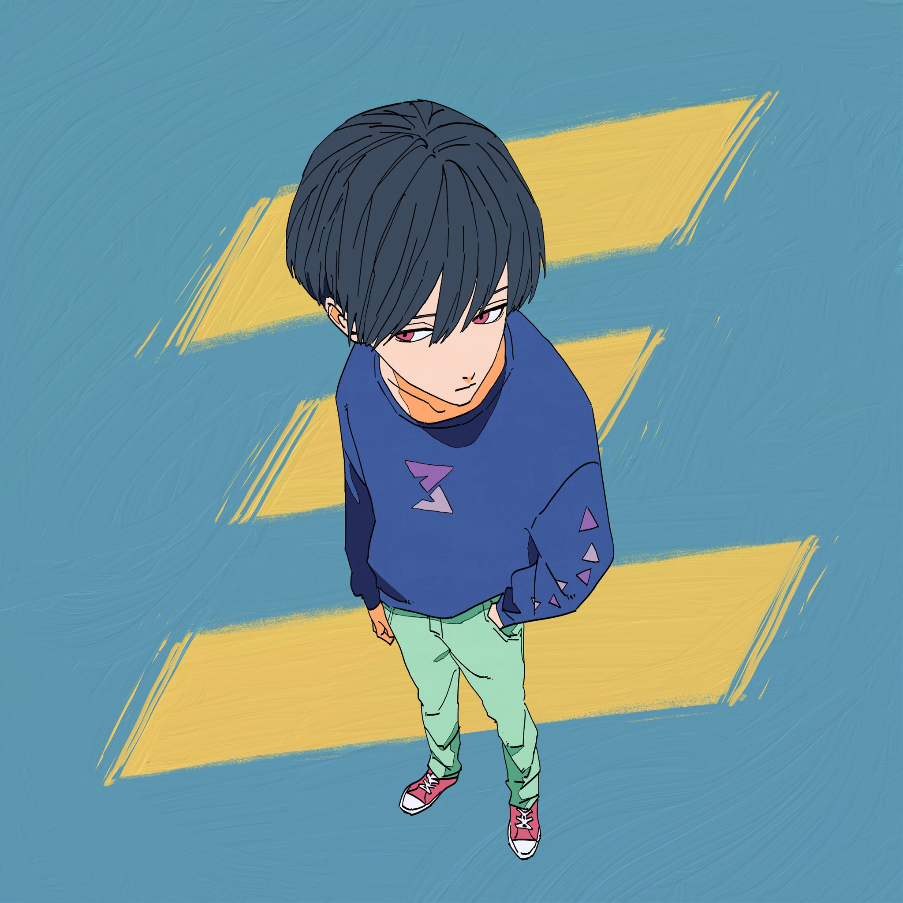

|  |
すりぃボカロP / シンガーソングライター2018 年 3月3日ボカロ P として活動を開始。活動当初より作曲・作詞のセンスが高く評価され、
|
|---|
Pick Up
個人的に特に好きな楽曲をピックアップします
空中分解（本人歌唱）ボカロPのすりぃとして初めて投稿した楽曲、「空中分解(feat.鏡音レン)」のセルフカバー。 初めて自身の歌声を公開し、作曲力だけでなく歌唱力もあることを知らしめた動画。 |
|
テレキャスタービーボーイ（feat.鏡音レン）LGBTを意識したMVや風刺の効いた歌詞が扱われており、「自由に生きていこう」という メッセージのこもったベストヒット曲。すりぃ本人が執筆した 小説版テレキャスタービーボーイも発売中。 |
|
中毒性のチュウお酒や恋愛の中毒性をテーマにした楽曲。テーマ通り中毒性のある
|
|
ギルティ「STOP！私刑」をテーマに初の顔出し実写MVとして発表された楽曲。
|